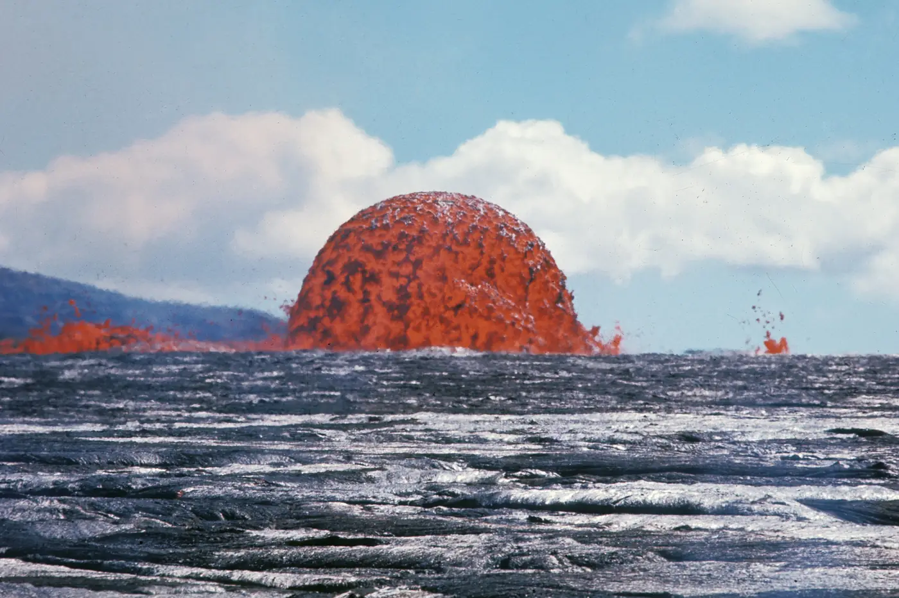
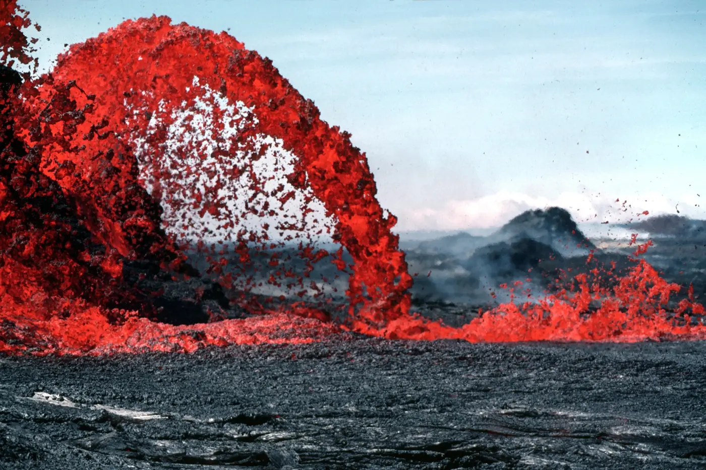
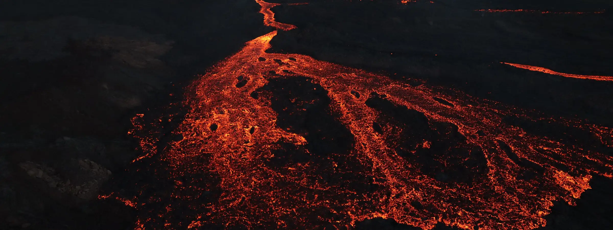
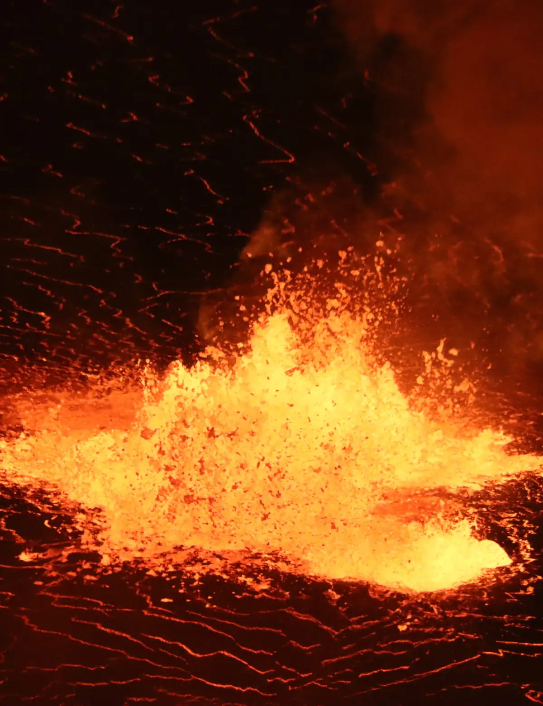
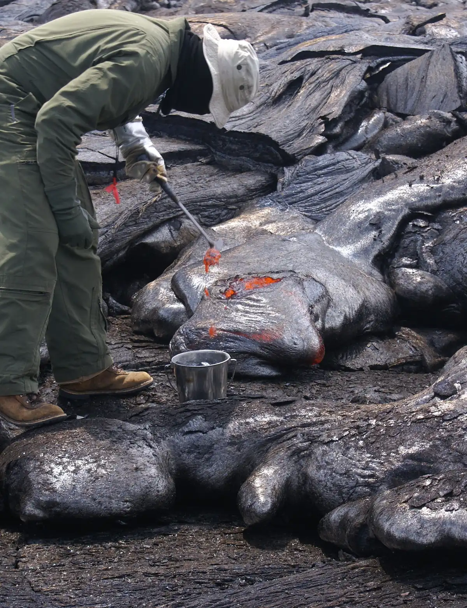

One replaces the other.
The outgoing frame leaves in 300ms. The incoming one takes 600ms and waits 250ms before starting, so you never see both at half strength.



Hawaiʻi Volcanoes
One clip, six files, three crops. The photograph underneath is the page if anything goes wrong.
The outgoing frame leaves in 300ms. The incoming one takes 600ms and waits 250ms before starting, so you never see both at half strength.


One scalar runs 0 → 1 across the scroll and drives the side inset and the corner radius together. Reduced motion pins it at 1.

Four techniques, each measured off apple.com's own shipped assets rather than guessed at. The clip above is three seconds long, has no audio track, and exists as six files: a 0.88 portrait crop for phones, a 1.62 for tablets and a 2.06 for desktop, each at 1× and 2×. The desktop file is 1260 pixels wide and weighs 308 KB — less than the photograph sitting underneath it would cost at the same width twice over.
Nothing is fetched when the page loads. The src is empty and
preload is none; the loader writes the file in
when the clip is still one and a half viewports away, starts playback half
a viewport early, and then leaves it alone — a clip that has started
is never paused because you scrolled past it. If the file has not produced
metadata before the timeout, the loader removes the video element outright
and the photograph it was covering becomes the page. That is the whole
fallback strategy: there is no spinner and no empty box, because the still
was never a placeholder.
With reduced motion set, none of it runs. The clip is not fetched and not merely paused, the moving layer leaves the layout, and the panel above sits pinned open at its final state. With scripting off, the same thing: the markup already contains every photograph, and the only rule that hides anything is gated on a class that script adds.
150ms per item, a 0.9s fade over a 0.7s 30px rise. The fade outlasts the move, so each tile has arrived before it finishes settling.

Summit
Halemaʻumaʻu, after the collapse.
East rift
Where the ground opened in 2018.

Fieldwork
A sample, taken at 1150 °C.